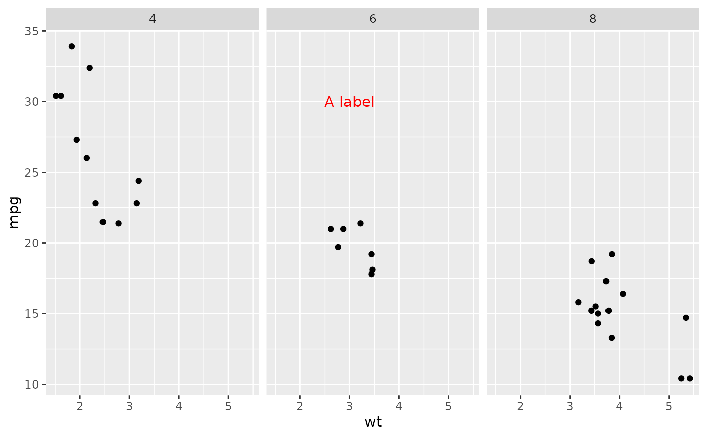

Create a ggplot2 annotation given some aesthetics, parameters, and facet variables + values.
Source:R/make_layer.R
make_layer.RdThis function is based on ggplot2::annotate(). The two main differences are: it returns an unevaluated function call rather than a ggproto object; and it can handle limiting annotations to (specified) facet level(s).
Arguments
- geom
Geom to annotate, such as "text".
- aes
Named list of aesthetics with corresponding data values, as in `list(x = 3, y = 30, label = "A label")`.
- params
Optional. Named list of parameters for geom, such as `list(colour = "black")`
- facets
Optional. Named list of facets; the name is the variable and the value if the level, such as `list(cyl = 4)`.
Examples
library(ggplot2)
base_plot <- ggplot(mtcars, aes(x = wt, y = mpg)) +
geom_point() +
facet_wrap(~cyl)
my_annot_call <- make_layer("text",
aes = list(x = 3, y = 30, label = "A label"),
facets = list(cyl = 6),
params = list(col = "red")
)
my_annotation <- eval(my_annot_call)
base_plot + my_annotation
